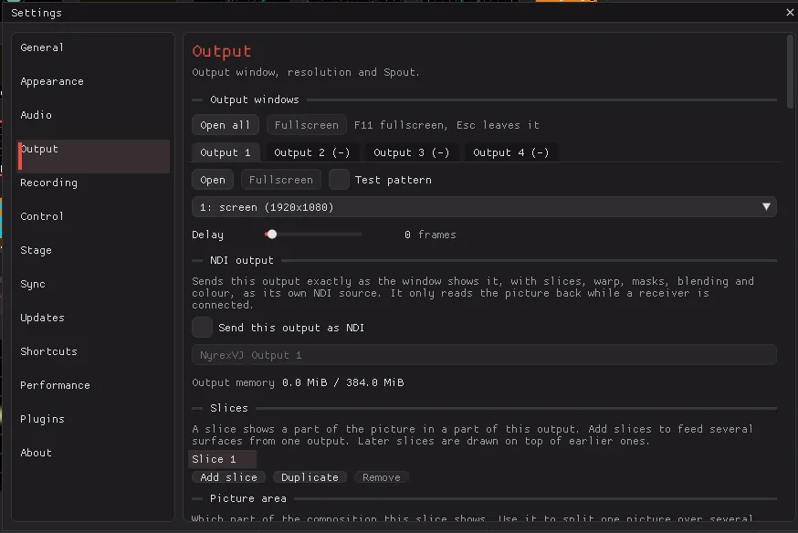

Contents
Getting started
- Welcome to NyrexVJ
- Installing and first start
- The window at a glance
- Your first show in five minutes
Playing visuals
- The clip grid
- Decks and transitions
- Layers and blending
- The Clip window
- Effects
- The Library
- Presets and sessions
- The Master window
Music and motion
Your own content
- Video and image clips
- Your own shaders
- 3D models
- The Clip Creator
- Text, particles and effect chains
- The node effect editor
- Live sources: Spout, NDI and cameras
Output and recording
- Outputs, mapping and OBS
- Sending the picture to OBS
- Video routing
- Output windows
- When the window is minimized or moved
- Slices and picture area
- Corners, warp and masks
- Edge blending and colour
- Several projectors at once
- 3D mapping onto surfaces
- Describing the room
- Calibrating by hand
- What to know
- Venue setups
- NDI per output
- Frame lock and delay
- Colour: LUTs, HDR videos and the display
- Recording
Live control and shows
- Control: MIDI, OSC and the web page
- Show sync and timecode
- The show timeline
- Stage: DMX, VRSL and VRChat
- Plugins
Reference and help
Manual / Output and recording
Outputs, mapping and OBS
#Sending the picture to OBS
Spout hands the finished picture to OBS on Windows without a screen capture. You set it up once with these steps.
- In NyrexVJ tick Send to OBS via Spout in the Output menu or in Settings, Output, and choose a sender name.
- In OBS install the obs-spout2-plugin once.
- Add a source called Spout2 Capture and pick the sender from the list.
Spout works on Windows only. The output window with a window capture in OBS keeps working as an alternative, and so does NDI. Send via NDI in the Output menu sends the main picture over the network to OBS with the NDI plugin, Resolume, vMix or NDI Studio Monitor.
#Video routing
Output, Video routing opens a window that shows what can be used as a source and who uses it. A route clip plays the picture of another layer, of several layers together or of the master in a layer of its own. Find the route clips in the Library under the filter Routing and put one into a cell like any other clip. A route clip is a normal layer: its effects, opacity, blend mode and colour grade apply to the routed picture.
- The sources are Layer 1 to 4 (the picture of the layer after its effects, before its opacity and blend mode), Layers 1-2, 1-3 and 1-4 (the mix of the first layers after their opacity and blend modes) and Master (after the master effects, before the master level and colour grade).
- Clips named Route show a source of the same frame: a layer can use a layer below it, and a layer can use the mix of the layers below it. Clips named Feedback show the previous frame, can use any source, even the layer's own picture, and are exactly one frame late.
- A choice that would make a loop is blocked: the layer draws nothing and the window says Blocked, this would be a loop. Use a Feedback clip when you want a loop on purpose.
- When the source is not playing (empty cell, bypass, solo of another layer) the route clip is transparent and the window says so. A source layer with opacity 0 is still drawn while something uses it.
- Under Pictures sent to other programs, Spout, NDI and Recording each have a choice: Master, or one of the layers, or the first two, three or four layers together. Another source than Master is sent as an opaque copy at the size of the composition, without the master effects, level and colour grade, and only while that sender runs. If its source is not playing, the sender sends black. The output windows always show the master.
- The window shows each source with a small live preview, its size, how many layers or senders use it and its memory. Copies are made on the graphics card, never through the processor, and are released about a second and a half after the last user. The memory of all copies is limited to 512 MiB.
#Output windows
Settings, Output has a tab for each of up to four outputs. Output 1 is always in use, outputs 2 to 4 are switched on with Use this output. Each output has its own display, Open and Close, Fullscreen or Windowed and a test pattern. F11 switches fullscreen for all open outputs and Esc leaves it. Two outputs on the same display get a warning because they would lie on top of each other.


#When the window is minimized or moved
The picture does not stop when you minimize the main window. The engine and every output (the output windows, Spout, NDI, the recording, the network sync, MIDI and OSC) keep running; only the interface is not drawn, which saves work. On Windows the system also runs its own loop while you drag the window, change its size or keep a menu open; NyrexVJ keeps the engine running in that time as well. The Windows part was only compiled and not run when this was written, so if an output freezes while you move the window, tell the maintainers.
#Slices and picture area
An output holds up to eight slices. A slice shows a part of the picture in a part of the output. Add slice, Duplicate and Remove manage them. The Picture area sets which part of the composition a slice shows, as Left, Top, Width and Height in percent, or with the buttons Whole picture and the four halves. That is how one picture is split over several projectors. Fill the whole window stretches it, Mirror horizontally and vertically flip it for rear projection.
#Corners, warp and masks
The canvas shows the output as the projector draws it. Drag the orange squares to move the four corners, so a projector that stands at an angle fits a wall. Drag the round points to bend the picture. Warp points sets the grid from 2 x 2 up to 17 x 17. Reset corners and Reset warp go back to the plain rectangle.
A mask cuts a slice to a shape, for example around a pillar or a stage set. It is a polygon with 3 to 32 points that can have curved edges, a shape you draw freehand with the mouse, or a picture such as a PNG. Soft edge blurs the border and Invert hides the inside instead of the outside.
#Edge blending and colour
For projectors that overlap, set the blend width of the shared edges in percent of the output. Curve and Gamma shape the fade so the two fades add up to the original brightness in the overlap. Black level raises the black of the picture outside the blend zones, because two overlapping projectors add up their grey, so the overlap looks lighter than the rest. Brightness dims a projector that is brighter than its neighbour.
Every slice has its own colour correction and so has the whole output: gain for red, green and blue, saturation, contrast, gamma and black lift. Use it to match projectors of different age.
#Several projectors at once
Arrange outputs sets up a grid of overlapping projectors in one click. Enter the number of Columns and Rows and the Overlap in percent of the whole picture. NyrexVJ then sets up the picture areas and the edge blending for that grid. Fine tune afterwards.
#3D mapping onto surfaces
Corners and warp fit a picture onto one flat screen. 3D mapping is for a room with real things in it, such as a wall, a pillar or a box: you tell NyrexVJ where the projector stands and where the surfaces are, and the picture is drawn onto them with the right perspective. It is off until you switch it on, it works per slice, and the other slices and outputs stay flat, so one venue can mix both.
Open Settings, Output, pick the output and find the block 3D mapping. Tick Use 3D mapping for this slice. NyrexVJ starts with a projector and one wall in front of it. While it is on, the corners and the warp of that slice are not used; the mask, the edge blending and the colour still are.
#Describing the room
Every position is in metres: X to the right, Y up and Z towards the audience. A projector or viewer with all angles at zero looks along minus Z. Positive yaw turns it to the left, positive pitch looks up and positive roll lifts its right side. The block prints this line above the controls.
The Projector has a Position, its Angles, a Field of view (the vertical opening angle of the lens) or the Throw ratio of its data sheet, which is the same setting, an Aspect that matches the output, a Lens shift for projectors that throw upwards and a Near and far distance. Aim at the surfaces turns it towards the middle of the surfaces.
Surfaces are the real things the projector lights. Add wall and Add box give you a start, and you can add, duplicate and remove up to 16 surfaces. Each is four corners in metres, in this order as seen from the front: top left, top right, bottom right, bottom left. The front is the side the projector has to be on; the back is not drawn unless Both sides is ticked. The Picture rectangle is the part of the picture that this surface shows, from 0 to 1, and Show all of the picture resets it. Subdivisions only make the surface finer; a flat one needs very few.
The two choices below the tick box decide what the surfaces show. Picture on the surfaces gives each surface its own rectangle of the picture. Picture seen by a viewer puts a virtual camera in the room, the Viewer, and each surface shows what that viewer would see there. Use that for forced perspective, where a picture only looks right from one spot.
#Calibrating by hand
Calibration finds where the projector really stands from points you know. It needs a tape measure and some patience.
- Pick points you can find again in the room, such as corners and marks on the surfaces, and measure them in the same coordinates as the surfaces. Four points are the least, and they must not lie on one line; spread them over the surfaces and use more for a better result.
- Add them under Calibration with Add point, or Add the corners of the selected surface. Enter the position in Place in space.
- Tick Show the points on the output and switch on the test pattern. Each point shows a green cross where the light has to land and an orange X where the current projector pose puts it.
- For each point move the green cross, with the mouse or with the arrow buttons (one pixel at 1920 wide, ten with Shift), until the light lands on the real mark. Put the cross where the pose puts the point shows you what the pose says now.
- Press Solve the projector pose. The result shows the average and the worst error in pixels at 1920 wide, and the list shows the error of every point. A point with a large error is usually a wrong measurement or a cross on the wrong mark.
- If the numbers look good, press Apply to the projector. Undo puts the old pose back. A result that does not fit is reported and changes nothing.
Leave Solve the field of view too off when you know the lens; with it on you need six points and the pose is less steady.
#What to know
Surfaces are drawn with a depth buffer, so a pillar in front of a wall hides it. If an output window has no depth buffer, the block says so and the surfaces are drawn in the order of the list. With several projectors give each output its own projector, calibrate each one, and set the edge blending of the overlap on both as usual; the blend does not know which surface the light hits. The markers are drawn on the output window and in a capture, not in NDI. The mesh counts in the output memory budget.
Not built: calibration with a camera, lens distortion, surfaces that are not flat rectangles and a projector that moves during the show.
#Venue setups
A venue setup saves all outputs of a room as a small file, with the displays, slices, warp, masks, blending and colour. Save as, Load, Duplicate, Export and Import manage them, and you can drop a setup file onto the window. --venue NAME loads one at start. That way you build the mapping once in a club and load it in one click the next time.
#NDI per output
Each output can send its own NDI source that carries the output exactly as the window shows it, with masks, warp and colour. The NDI library is not shipped with NyrexVJ, install the free NDI Tools. A memory budget of 384 MiB is tracked for masks, delay and NDI readback, and the settings show how much the current setup needs.
#Frame lock and delay
Frame lock draws all output windows first and swaps them right after each other, so several screens show the same frame. Each output can be delayed by 0 to 8 frames to line up screens with different processing time. The settings show the measured swap skew, and the Sync bars test pattern helps you film several screens to compare them. It is not a hardware genlock. Below the swap skew, the line Hardware frame lock says whether your graphics driver lists the extensions that professional cards with a sync board offer: "Not offered by this graphics driver" is normal for most graphics cards. "Offered by the driver, not used by NyrexVJ" only means that the driver lists them. NyrexVJ cannot see a sync board or a lock and does not switch any of it on; set up a sync board in the driver's own control panel and film the Sync bars to see what you get.
Found a mistake or something missing? Tell us on GitHub. The same manual is built into the program, so you have it without internet. Open it with F1 or from the Help menu, then User manual.